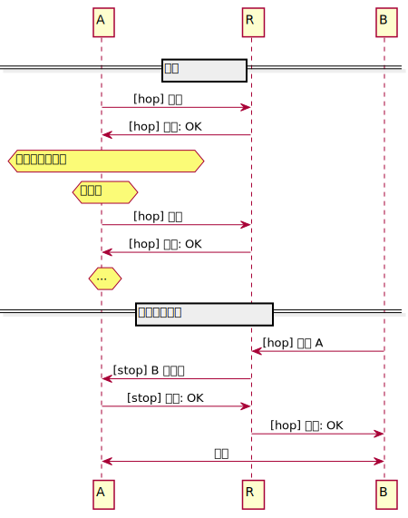

Lesson 2
Floodsub 导读
- 公共方法
Flood的实现
异步编程介绍
- 异步编程的演进
- 通过例子深入体会异步编程
Rust 工程
- 常用目录结构举例
- 测试、属性
实践作业
-
为
chat用例添加测试tips：测例内容不是重点，实现尽可能多的测例形式
-
以
@user messages的形式实现私聊tips：可以分别从 发送 和 接收显示 两个方面考虑，并实现
Floodsub 代码导读
普遍的中文名称是：洪泛订阅。基于 发布-订阅 模式的一种通讯协议。物联网人熟知的 MQTT 也是这种模式。早期的报纸订阅、现在的各类 APP 中关注作者、账号、频道，等等，都是这种模式的真实写照。
这种模式可以有效隔离发送者和接收的联系，让各方只包含自己该处理的内容，以达到从设计上的代码解耦效果。
protocols/floodsub/
├── build.rs // 主要用来编译 Protocol Buffers
├── Cargo.toml
├── CHANGELOG.md
└── src
├── layer.rs // behaviour layer 行为（描述）层
├── lib.rs // 对外接口描述
├── protocol.rs // 协议的数据类型
├── rpc.proto // Protocol Buffers 格式描述文件
└── topic.rs // 主题模块
1 directory, 8 files
其它文件浏览
Floodsub 基本逻辑就是订阅消息、发送消息与传递消息。每一个节点在收到消息后，都会对连接的全部节点进行发送消息，“一传十，十传百”，真的就是字面上的意思，所以会造成大量的重复发送，是一种以带宽换取传播速度的方式，适合小型网络。
topic.rs：定义了主题的数据结构，为其添加From<Topic>trait，以此实现主题的创建；protocol.rs: 协议传输相关内容，定义了协议和消息的数据结构，实现了协议的升级 trait，消息的解析、打包 trait；rpc.proto:消息内容的 protobuf 描述文件，会经过build.rs里定义的行为，在编译初期转换为 rust 代码；lib.rs:Floodsub包对外提供的数据结构、方法。
layer.rs
Floodsub 提供的方法
-
pub fn new(local_peer_id: PeerId) -> Floodsub使用默认配置创建一个
Floodsub -
pub fn from_config(config: FloodsubConfig) -> Floodsub使用指定配置创建一个
Floodsub -
pub fn add_node_to_partial_view(&mut self, peer_id: PeerId)将节点添加到消息传播节点链表中
-
pub fn remove_node_from_partial_view(&mut self, peer_id: &PeerId)将节点从消息传播节点链表中移除
-
pub fn subscribe(&mut self, topic: Topic) -> bool✨订阅该主题 如果订阅有效返回
true，如果已经订阅了就返回false -
pub fn unsubscribe(&mut self, topic: Topic) -> bool取消订阅该主题
注意： 只需要主题名称
如果之前订阅了该主题就返回true -
pub fn publish( &mut self, topic: impl Into<Topic>, data: impl Into<Vec<u8, Global>>)✨只在订阅了该主题的情况下，将消息发布出去
-
pub fn publish_any( &mut self, topic: impl Into<Topic>, data: impl Into<Vec<u8, Global>>)发布消息，即使没有订阅该主题
-
pub fn publish_many( &mut self, topic: impl IntoIterator<Item = impl Into<Topic>>, data: impl Into<Vec<u8, Global>>)以多主题的方式发布消息
注意： 如果没有订阅其中的任何主题，就不发布该消息 -
pub fn publish_many_any( &mut self, topic: impl IntoIterator<Item = impl Into<Topic>>, data: impl Into<Vec<u8, Global>>)以多主题的方式发布消息，即使没有订阅其中的任何主题
为 Floodsub 实现 NetworkBehaviour
重点是在 inject_event 实现了事件处理和最后的消息的分发，即 Flood。
async 异步编程
异步编程的演进
1. 单片机裸机程序（无操作系统、无多线程、调度）
只能有一个工作流。所以全部都是非阻塞函数，通过轮询的方式执行。这种最简单的嵌入式设备的程序，工作内容明确，业务逻辑简单，只需设计好执行流程，都可以解决。
while (1) {
func1();
task1();
func2();
task2();
...
}
简单、高效、易于调试，唯一的缺点就是业务逻辑的复杂度上限取决于函数和执行流的设计。
2. 有了不确定的I/O、UI交互
增加了串口接收、解析、应答报文；按键响应、屏幕刷新。这时最简单粗暴的方式是使用中断，前后台的程序框架，而且串口的任务放在串口中断里，屏幕刷新放在定时器中断里，按钮任务放在引脚的外部中断。
这种方式除了简单，其他都是缺点。如代码逻辑分散（不是高内聚低耦合）；中断内停留时间过长；大量的全局变量、频繁的数据竞争等等。
稍好一些，也是主流的做法是在中断内置标志位，前台程序中轮询标志位，根据标志位执行任务。此时其实已经有异步编程的意思了。
3. 有了操作系统（多任务、多线程）
支持多个工作流。这时的设计空间就很大了，有一种方式就是回调函数：既然当前无法获取资源、也不知道何时可以获取到，那就指定一个有资源时该干的事，然后执行开一个工作流的单独等待、执行。如各类 UI 框架的事件回调函数，最明显的就是按钮点击函数，优点是代码书写自然，符合设计直觉。但有一类情况，如：
JS的xhr请求处理：
var xhr = new XMLHttpRequest();
xhr.onreadystatechange = function() {
if (xhr.readyState == 4 && xhr.status == 200) {
document.getElementById("myDiv").innerHTML = xhr.responseText;
}
}
Qt 的 QModbus 客户端请求：
bool MyModbus::ReadCoils()
{
QModbusDataUnit read_unit(QModbusDataUnit::Coils, start_add, numbers);
if (auto *reply = my_client->sendReadRequest(read_unit, server_id)) {
if (!reply->isFinished()) {
connect(reply, QModbusReply::finished, this, &MyModbus::ReadReadyCoils);
return true;
} else {
delete reply;
return false;
}
}
return false;
}
void MyModbus::ReadReadyCoils()
{
// ...
}
这类 I/O 事件除了有本次的确定性，还有多个事件执行顺序的确定性。如果有多个请求，且后面的请求依赖前一次的请求结果，那就需要将后面的代码写在前一次的回调函数内，就此，形成著名的回调地狱（Callback Hell）问题。
4. async 编程
async 是 Rust 选择的异步编程模型。这种模型在异步执行的本质下，有同步代码的书写逻辑。
先思考一个问题，在没有 async 之前，如果要解决回调地狱，你会怎么做？
一种做法是编写一个函数，定时轮询前次的结果，如：
void sync(void *result) {
while (!is_done(result)) {
mdelay(10);
}
}
将这样的函数嵌在异步任务之间，或者将回调函数定位轮询的结束条件，如 Qt 中：
if (!reply->isFinished()) {
QEventLoop loop;
connect(reply, &QModbusReply::finished, &loop, &QEventLoop::quit);
loop.exec();
}
另一种做法是编写一个内部创建互斥量的函数，将互斥量传递给异步任务，由异步任务完成后释放互斥量，在函数在返回前等待互斥量，形如：
typedef void(*sync_func_t)(mutex_t*);
void sync(sync_func_t func) {
mutex_t *mutex = mutex_new();
func(mutex);
mutex_take(mutex);
}
这是 C 语言的形式，如果用 C++ 或其他带对面的语言，可以使用链式调用的形式写出更优雅的代码，如将互斥量返回：
typedef void(*async_func_t)(mutex_t*);
mutex_t* async(async_func_t func) {
mutex_t *mutex = mutex_new();
func(mutex);
mutex_take(mutex);
return mutex;
}
void foo(void) {
async(func1).take_delete();
}
这个就是 async 编程的基本模型，对我来讲是一种很自然的演进方式。编译器专家在从编译器层面支持了 async、await 语法。async 的底层不会这么简单，是有着一套复杂的设计，而且每种语言都有自己的独特实现，JS 和 Rust 就是完全不同的两种实现方式。
以上方法的本质其实是：当前线程主动让出 CPU。以阻塞任务或耗时任务，单独运行在一个线程中，以阻塞当前线程的方式，让其它任务执行，一次实现并发。但线程是很重的，线程间切换、上下文切换是一个繁重的开销，数量少时没感觉，但如 web 服务器这样的场景，少则成百上千，多则百万上亿，哪怕线程池也难以处理。所以又多了一个协程的概念，一个线程可以有多个协程，Rust 的 async .await 底层就是协程支持的。
async 和多线程的性能对比
| 操作 | async | 线程 |
|---|---|---|
| 创建 | 0.3 微秒 | 17 微秒 |
| 切换 | 0.2 微秒 | 1.7 微秒 |
Demo 1
Future 、async 、await
// main.c use futures::executor::block_on; // use async_std::task::{sleep}; // use std::time::Duration; struct Buff { data: Vec<u8>, } async fn rx_socket() -> Buff { // sleep(Duration::from_secs(2)).await; Buff { data: vec![1, 2, 3, 4], } } async fn rx_log(buff: Buff) { println!("socket 接收：{:?}", buff.data); } async fn socket_log() { let buff = rx_socket().await; rx_log(buff).await; } async fn tx_serial() { let buf = Buff { data: vec![11, 22, 33, 44], }; println!("serial 发送：{:?}", buf.data); } async fn async_main() { let f1 = socket_log(); let f2 = tx_serial(); futures::join!(f1, f2); } fn main() { block_on(async_main()); }
Future
可以理解为 将来的结果，在不确定的某个时刻会产生一个期望的结果。每一个 async 都会返回 Future，原型为：
#![allow(unused)] fn main() { pub trait Future { type Output; fn poll(self: Pin<&mut Self>, cx: &mut Context<'_>) -> Poll<Self::Output>; } }
核心方法 poll 可以获取期望结果。如果当前没有结果，也不会阻塞在这里，而是通过后续的轮询，当有结果了，再唤醒当前任务。传递给 poll 方法的 context 可以提供 Waker，它是唤醒当前任务的句柄。
当使用 future 时，通常不会直接调用 poll，而是 .await 该值。
Waker
可以理解为一个信号量，实际是一个特定的唤醒行为，当 future 有结果了，通知 poll 唤醒当前任务。原型为：
#![allow(unused)] fn main() { #[repr(transparent)] pub struct Waker { /* fields omitted */ } }
Waker 是通过通知执行者准备运行来唤醒任务的句柄。
该句柄封装了 RawWaker 实例，该实例定义了特定于执行者的唤醒行为。
实现 Clone，Send 和 Sync。
Executor
Rust 的 Future 是惰性的，创建后并不会自动执行，而是需要显式的驱动它执行。async 函数内可以使用 .await 来驱动其中的 Future，而最外面的 async 函数，就需要一个执行器来驱动。
在这里 futures::executor::block_on 就是执行器。
执行器会管理一批 Future (最外层的 async 函数)，然后通过不停地 poll 推动它们直到完成。最开始，执行器会先 poll 一次 Future ，后面就不会主动去 poll 了，而是等待 Future 通过调用 wake 函数来通知它可以继续，它才会继续去 poll 。这种wake 通知然后 poll的方式会不断重复，直到 Future 完成。
join!
表示并发地处理多个 Future，若其中一个阻塞，则执行其它的，当全部阻塞时，当前函数会阻塞，让将线程的所有权让给执行器所在的函数（线程）。
Demo 2
join! 、select!
join!
Demo1 中提到要多个 Future 并发执行，可以使用 join!，感受一下这两段程序的区别：
#![allow(unused)] fn main() { async fn enjoy_book() {} async fn enjoy_music() {} async fn enjoy_book_then_music() -> (Book, Music) { let book = enjoy_book().await; let music = enjoy_music().await; (book, music) } }
#![allow(unused)] fn main() { async fn enjoy_book() {} async fn enjoy_music() {} async fn enjoy_book_and_music() -> (Book, Music) { let book = enjoy_book(); let music = enjoy_music(); join!(book, music) } }
前者使用 .await 驱动 Future， Future时惰性的，驱动时才会执行，且需要全程驱动，所以后续 Future 只有在前一个完成的情况才会的到机会执行。这种写法适合多个目标任务需要顺序运行，但不能阻塞其它任务的场景。如根据当前请求结果，发起下一次请求。
后者使用 join! 同时驱动多个 Future，本质上还是在同一个线程内，所以更准确的描述时分时驱动，即并行。当所有 Future 都完成后，join! 退出。这种写法适合执行多个互不相关目标任务的场景。如一次发起多个请求以获取多个文件。
以上都是基于多个 Future 都成功完成的假设。那如果其中一个发生错误了呢？
use futures::{ future::TryFutureExt, try_join, executor::block_on }; struct Book { book: String, } struct Music { music: String, } async fn get_book() -> Result<Book, String> { Ok(Book{book: "book".into()}) } async fn get_music()-> Result<Music, String> { // Ok(Music{music: "music".into()}) Err("music err".to_string()) } async fn get_book_and_music() -> Result<(Book, Music), String> { let book = get_book().map_err(|e| e); let music = get_music().map_err(|e| e); try_join!(book, music) } fn main() { match block_on(get_book_and_music()) { Ok((b, m)) => println!("{} {}", b.book, m.music), Err(e) => println!("{}", e), } }
可以使用 try_join! 来在发生错误时终止该段程序（并获取错误）。
HTTP 客户端向服务器请求资源就涵盖了上述三种场景。
select!
同样是同时执行多个 Future，感受一下下面的程序：
use futures::{ future::FutureExt, // for `.fuse()` pin_mut, select, executor::block_on }; async fn task_one() -> String { "task one completed first".into() } async fn task_two() -> String { "task two completed first".into() } async fn race_tasks() { let t1 = task_one().fuse(); let t2 = task_two().fuse(); pin_mut!(t1, t2); select! { msg = t1 => println!("{}", msg), msg = t2 => println!("{}", msg), } } fn main() { block_on(race_tasks()); }
select! 在任何一个 Future 完成时就退出，这与 C 语言中的 select() 函数意思相近。这种写法适合在同时执行多个目标任务，有完成的就立即处理的场景。
通过 loop{} 可以达到 join! 相同的作用，完成所有 Future。
fuse 是保险丝的意思，可以理解为 熔断，即 select! 中已经完成的 Future 在后续的 poll 中都不会执行了。
select! 获取的是 Future 的可变引用，以保证未完成的 Future 在 select! 外仍有被驱动的能力，完成后仍可以得到响应。所以必须添加 pin_mut!。
Demo 3
Pin 、 UnPin
自引用类型：
struct Test { a: String, p2a: *const String, } impl Test { fn new(txt: &str) -> Self { Test { a: String::from(txt), p2a: std::ptr::null(), } } fn init(&mut self) { let self_ref: *const String = &self.a; self.p2a = self_ref; } fn a(&self) -> &str { &self.a } fn p2a(&self) -> &String { assert!(!self.p2a.is_null(), "Call Test::init first"); unsafe { &*(self.p2a)} } } fn main() { let mut test1 = Test::new("test1"); let mut test2 = Test::new("test2"); test1.init(); test2.init(); println!("a: {}, p2a: {}", test1.a(), test1.p2a()); std::mem::swap(&mut test1, &mut test2); println!("a: {}, p2a: {}", test2.a(), test2.p2a()); // // 0x11 // --------- --------- // | test1 | | 0x11 | // --------- --------- // 0x22 // --------- --------- // | test2 | | 0x22 | // --------- --------- // swap: // 0x11 // --------- --------- // | test2 | | 0x22 | // --------- --------- // 0x22 // --------- --------- // | test1 | | 0x11 | // --------- --------- // }
Rust 中大部分类型有默认实现了 UnPin，这是一个 trait，表示该类型的值是可以移动的（move）。
实现了 !Unpined 的类型，表示 没有实现 UnPin，不是固定、无法移动的意思（负负得正），而是表示 可以固定，需要显式的通过 Pin 将其固定，无法移动。
use std::pin::Pin; use std::marker::PhantomPinned; struct Test { a: String, p2a: *const String, _marker: PhantomPinned, } impl Test { fn new(txt: &str) -> Self { Test { a: String::from(txt), p2a: std::ptr::null(), _marker: PhantomPinned, } } fn init(self: Pin<&mut Self>) { let self_ptr: *const String = &self.a; let this = unsafe {self.get_unchecked_mut()}; this.p2a = self_ptr; } fn a(self: Pin<&Self>) -> &str { &self.get_ref().a } fn p2a(self: Pin<&Self>) -> &String { assert!(!self.p2a.is_null(), "Call Test::init first"); unsafe { &*(self.p2a)} } } fn main() { let mut test1 = Test::new("test1"); let mut test1 = unsafe { Pin::new_unchecked(&mut test1)}; Test::init(test1.as_mut()); let mut test2 = Test::new("test2"); let mut test2 = unsafe { Pin::new_unchecked(&mut test2)}; Test::init(test2.as_mut()); println!("a: {}, p2a: {}", Test::a(test1.as_ref()), Test::p2a(test1.as_ref())); std::mem::swap(test1.get_mut(), test2.get_mut()); println!("a: {}, p2a: {}", Test::a(test2.as_ref()), Test::p2a(test2.as_ref())); }
Future 通过 poll .await 被执行时，是在另外一个状态机里运行，如果期间有引用的数据，当数据源被移动（或销毁），就会造成类似悬垂引用的内存错误，所以数据源一定要被 Pin 住。
Rust 工程
Rust 另一个特色是其完备的构建系统，即 Cargo 工具，构建可以拆分开理解：结构、建立。
结构 就是工程目录结构；
建立 就是通过属性，赋予代码段编译时的选项；
当然最为一个软件工程，测试系统、文档系统也是必不可少的，这些都包含在 Rust 的构建系统，且各个都功能强大。
Rust 工程结构
对于一个 Rust 工程常见的三种工程目录结构：
cargo new原始工程
.
├── .gitignore
├── .git
│ └── ...
├── Cargo.toml
└── src
└── lib.rs/main.rs
适用于简单工程，通常是一些临时工程，用来快速验证某种想法，如临时写个demo、tool。
常用命令：cargo run、cargo build
- 单个工程的完整目录
.
├── .gitignore
├── .git
│ └── ...
├── Cargo.toml
├── src
│ ├── lib.rs/main.rs
│ └── bin
│ ├── named-executable.rs
│ ├── another-executable.rs
│ └── multi-file-executable
│ ├── main.rs
│ └── some_module.rs
├── benches
│ ├── large-input.rs
│ └── multi-file-bench
│ ├── main.rs
│ └── bench_module.rs
├── examples
│ ├── simple.rs
│ └── multi-file-example
│ ├── main.rs
│ └── ex_module.rs
└── tests
├── some-integration-tests.rs
└── multi-file-test
├── main.rs
└── test_module.rs
这是一个典型的 crate 结构，一个完整的项目应具备上述所有内容，对性能不敏感的项目可能会没有 benches。
- 工作空间
即
workspace，将多个工程组成一个工作空间
.
├── .gitignore
├── .git
│ └── ...
├── Cargo.toml
│── src
│ └── lib.rs/main.rs
├── proj1
│ ├── Cargo.toml
│ └── src
│ └── lib.rs/main.rs
├── proj2
│ ├── Cargo.toml
│ └── src
│ └── lib.rs/main.rs
└── proj3
├── Cargo.toml
└── src
└── lib.rs/main.rs
根目录下的 Cargo.toml 一定会有 [workspace] 选项，用来显式的描述该工作空间内的成员工程：
[workspace]
members = [
"core",
"misc/metrics",
"misc/multistream-select",
"misc/rw-stream-sink",
]
当遇到更大项目，大到其中的某个功能都可以拿出来单独作为一个 crate 进行开发、维护时，就可以使用这种结构。
libp2p 就是这样产生的，本身时 ipfs 的功能组件，后来被提出来的单独开发，rust 实现版本 rust-libp2p 就是这种目录结构。而因为 libp2p 又有功能值的单独开发，rust-libp2p 中就将这类功能作为 member,如 swarm 等。
还有一种情况适用与这种结构：组件工程不在一个目录中，用 workspace 的形式讲他们组合起来，可以指定绝对路径。
属性
Rust 程序中的任何特性项都可以用 属性(attribute) 来修饰。属性是 Rust 中写给编译器看的各种指令和建议的普适语法。
出现的形式是在文件的最开始文件，在变量、函数、方法、结构体等各种代码的上方：
#[...]
可以简单的理解就是开启功能。
常见属性举例
-
#[allow]
允许某些行为通过编译器的检查，如：
#[allow(non_camel_case_types)]，允许非驼峰形式的命名方式；
#allow[unused_xxx]，允许未使用的某些东西；
#allow[dead_code]，允许未使用的代码； -
#[cfg]
添加条件编译的内容，例举一些最常用的部分：
| #[cfg(...)] 选项 | 何时启用 |
|---|---|
| test | 启用测试，方式可以是 cargo test 或 rustc --test |
| debug_assertions | 启用调试断言 |
| unix | 为 Unix 编译（包括 macOS） |
| windows | 为 Windows 编译 |
| target_pointer_width = "64" | 为 64 位平台编译，还可以是：32 |
| target_arch = "x86_64" | 为 x86_64 架构编译。 其它值还有：x86、arm、aarch64 …… |
| target_os = "macos" | 为 macos 编译。 其它值还有：windows、ios、android …… |
| feature = "robots" | 开启了 robots 特性，方式可以是cargo build --feature robots 或 cargo build --cfg feature='"robots"' 或在 Cargo.toml 的 [features] 下申明 |
| (A) not(A) | 成对出现，提供一个函数的两种实现，分别对应满足 A 和不满足 A 的情况 |
| all(A, B) | A 和 B 都满足时（&&） |
| any(A, B) | A 或 B 满足时（ |
-
#[inline]
#[inline(always)]、#[inline(never)]
-
#[feature(xxx)]
开启某些特性。
-
#[derive] 使用
derive属性的属性，会有编译器生成对应 trait 的默认实现代码。需要先写过程宏。
标准库中的可派生 trait：
Debug、PartialEq、Eq、PartialOrd、Ord、Clone、Copy、Hash、Default
测试
- 单元测试
- 集成测试
- 文档测试
Lesson 3
1. 添加测例
2. 实现私聊
3. 自由讨论
chat超时的解决方案
测例
rust 的 cargo 系统集成了测试系统，使得开发者不必再去编写或者挑选测试工具，在不使用 IDE 的情况下，依旧能有一个很棒的测试体验。
基本命令格式
cargo test [options] [testname] [-- test-options]
单元测试
是与源码写在一个文件中的测例。通常同于测试文件中的某些功能函数。用 #[test] 对测例函数进行注解。
#![allow(unused)] fn main() { #[test] fn test_peer_id() { let local_key = identity::Keypair::generate_ed25519(); let local_peer_id = PeerId::from(local_key.public()); println!("Local peer id: {:?}", local_peer_id); } }
命令：
cargo test --example chat
集成测试
单独创建一个区域用于编写测例，这里测例通常都是功能丰富的，用于测试多个函数、模块是否可以正常合作，功能块的运行是否符合预期。
cargo 默认将集成测试目录至与根目录中：
.
├── Cargo.lock
├── Cargo.toml
├── examples
│ └── ...
├── README.md
├── src
│ └── ...
└── tests
└── chat.rs
测例函数同样需要用 #[test] 对测例函数进行注解，且此时测试文件是一个完整的源码文件，依赖关系需要正确：
#![allow(unused)] fn main() { // ./tests/chat.rs use libp2p::{ floodsub::{self, Floodsub, FloodsubEvent}, identity, mdns::{Mdns, MdnsConfig, MdnsEvent}, swarm::SwarmEvent, Multiaddr, NetworkBehaviour, PeerId, Swarm, }; /// /// ``` /// let local_key = identity::Keypair::generate_ed25519(); /// let local_peer_id = PeerId::from(local_key.public()); /// assert!(true) /// ``` /// #[test] fn new_peer_id() { let local_key = identity::Keypair::generate_ed25519(); let local_peer_id = PeerId::from(local_key.public()); assert!(true) } }
命令：
cargo test --test chat
文档测例
cargo 有一套功能完善的文档系统，完善到可以在代码中写注释、在注释中写文档、在文档中写测例。
注意：
文档测例在库（
lib）工程中有用。
#![allow(unused)] fn main() { /// /// ``` /// assert!(true); /// ``` /// mod handler; mod protocol; // ... }
命令：
cargo test --doc
私聊
作业内容：
修改 examples/chat.rs 代码，添加类似私聊的功能，即通过某种既定的方式，使得发送的消息只对指定的接收者显示。
私聊格式：
@name msg
方案一
从接收方思考，即除了指定格式的消息能显示外，其它格式不显示：
#![allow(unused)] fn main() { SwarmEvent::Behaviour(OutEvent::Floodsub( FloodsubEvent::Message(message) )) => { if let Some((token, msg)) = String::from_utf8_lossy(&message.data).split_once(' ') { if token == "@name" { println!( "Received: '{:?}' from {:?}", msg, message.source ); } } // println!( // "Received: '{:?}' from {:?}", // String::from_utf8_lossy(&message.data), // message.source // ); } }
方案二
从发送方思考，发送的时候除了消息内容外，其实还有主题内容，那么可以在主题内容上做文章，从而实现私聊功能。
- 增加一个主题订阅：
#![allow(unused)] fn main() { // Create a Floodsub topic let floodsub_topic = floodsub::Topic::new("chat"); behaviour.floodsub.subscribe(floodsub_topic.clone()); behaviour.floodsub.subscribe(floodsub::Topic::new("@name").clone()); }
- 发送时修改主题：
#![allow(unused)] fn main() { let topic; let mut msg = line.expect("Stdin not to close"); // '@' 开头 且 带有空格 ‘ ’ if msg.starts_with("@") && msg.contains(" ") { // 用 ‘ ’ 分割消息主题，提取主题 let v: Vec<&str> = msg.split(' ').collect(); println!("topic: {}", v[0]); // 创建主题 topic = floodsub::Topic::new(v[0]); msg = v[1].to_string(); } else { println!("topic: {}", "chat"); topic = floodsub_topic.clone(); } }
自由讨论
超时问题
在运行 chat 例子的时候发现，当程序空闲（无数据交换）10秒左右，就再也无法发送、接收消息了。
查找发现是因为：
chat 例子使用了 floodsub 协议，而 floodsub 使用了 OneShotHandler 网络行为（NetworkBehaviourAction）
解决方案1
修改默认超时时间：
#![allow(unused)] fn main() { // swarm/src/handler/one_shot.rs impl Default for OneShotHandlerConfig { fn default() -> Self { let timeout = 10; OneShotHandlerConfig { keep_alive_timeout: Duration::from_secs(timeout), outbound_substream_timeout: Duration::from_secs(timeout), max_dial_negotiated: 8, } } } }
解决方案1
去除超时事件抛出动作：
#![allow(unused)] fn main() { // protocols/mdns/src/behaviour.rs // Emit expired event. // let now = Instant::now(); // let mut closest_expiration = None; // let mut expired = SmallVec::<[(PeerId, Multiaddr); 4]>::new(); // self.discovered_nodes.retain(|(peer, addr, expiration)| { // if *expiration <= now { // log::info!("expired: {} {}", peer, addr); // expired.push((*peer, addr.clone())); // return false; // } // closest_expiration = Some(closest_expiration.unwrap_or(*expiration).min(*expiration)); // true // }); // if !expired.is_empty() { // let event = MdnsEvent::Expired(ExpiredAddrsIter { // inner: expired.into_iter(), // }); // return Poll::Ready(NetworkBehaviourAction::GenerateEvent(event)); // } // if let Some(closest_expiration) = closest_expiration { // let mut timer = T::at(closest_expiration); // let _ = Pin::new(&mut timer).poll_next(cx); // self.closest_expiration = Some(timer); // } Poll::Pending }
Lesson 5
Circuit Relay protocol V2 介绍
Relay 代码导读
trait 介绍
回路中继 V2
这是对官方
Circuit Relay protocol V2规范的翻译
这是 libp2p 回路中继协议的版本2。
| 生命周期阶段 | 完成度 | 状态 | 最新修订 |
|---|---|---|---|
| 3A | 推荐 | 积极 | r1, 2021-12-17 |
作者：@vyzo
兴趣小组: @mxinden, @stebalien, @raulk
有关完成度级别和规范状态的内容，请参阅生命周期文档
目录
介绍
这是 libp2p-circuit 中继协议的第2版规范内容。
与第1版相比，有一些重要的不同之处：
- 该协议已分为两个子协议，
hop和stophop协议由客户端发起，在客户端向中继发送命令时使用；它用于在中继中保留资源并通过中继打开到度等点的交换连接。stop协议管理回路交换连接的端点
- 引入了资源预留的概念，希望使用中继的对等方明确预留资源并获得 预留凭证，这些预留凭证可以分发给它们的对等点用于路由。
- 引入了有限中继的概念，由此中继提供具有时限持续时间和数据上限的交换连接。
基本原理
协议向第2版演进是受到我们在实际场景中使用中继的体验的影响。原始协议非常灵活，但在中继连接的实用性方面存在一些局限性。
主要问题是第1版没有在中继中保留资源的机制，这导致中继不断超额订阅，并且需要（通常无效的）试探来平衡资源。在实践中，运行中继被证明是一项繁重的任务，需要具有大量硬件和带宽成本的专用主机。此外，通过中继直接连接升级的打洞协调工作正在进行中，不需要无限中继连接。
为了解决这种情况并无缝支持广泛打洞，我们引入了有限的中继和预定槽。这允许中继有效地管理其资源并提供小规模服务，从而能够部署中继大军以实现极端水平扩展，而无需过多的带宽成本和专用主机。
此外，在最初，将回路启动和终止合并在同一协议中，使得按需提供中继服务变得非常困难，与主机是否支持客户端功能脱钩。
为了解决这个问题，我们将协议拆分为 hop 和 stop 子协议。这使我们能够始终在主机中启用客户端功能，同时在通过 AutoNAT 确定主机的可达性后，提供稍后在公共主机中安装中继服务的选项。
协议内容
连接交互
下图说明了在建立中继连接的过程中，三个对等点 A、B 和 C 之间的交互。节点A 是私有节点，不可公开访问；它利用对 等点R 的服务作为中继。对等B 是另一个希望通过 R 连接到 对等A 的对等点。

图表重现说明
使用 https://plantuml.com/ 和下面的内容来重现图表。
@startuml
skinparam backgroundColor white
participant A
participant R
participant B
skinparam sequenceMessageAlign center
== 预留 ==
A -> R: [hop] 预留
R -> A: [hop] 状态: OK
hnote over A: 预留即将到期。
hnote over A: 刷新。
A -> R: [hop] 预留
R -> A: [hop] 状态: OK
hnote over A: ...
== 回路建立连接 ==
B -> R: [hop] 连接 A
R -> A: [stop] B 的连接
A -> R: [stop] 状态: OK
R -> B: [hop] 状态: OK
B <-> A: 连接
@enduml
Hop跃点协议
Hop 协议管理客户端和中继之间的交互；它使用协议 ID /libp2p/circuit/relay/0.2.0/hop。
协议分为两部分：
- 预留，由希望接收中继服务的对等点发起；
- 连接初始化，由希望通过中继连接某对等点的对等点发起。
预留
为了创建一个预留，对等点打开一个和中继的连接，并以 type = RESERVE 发送一条 HopMessage:
HopMessage {
type = RESERVE
}
中继以 type = STATUS 响应一条 HopMessage，用来指示预留是否被中继接受。
如果预留被接受，回送的消息符合一下格式：
HopMessage {
type = STATUS
status = OK
reservation = Reservation {...}
limit = Limit {...}
}
如果预留被拒绝，中继回送的 HopMessage 符合一下格式：
HopMessage {
type = STATUS
status = ...
}
其中 status 字段的值非 OK。常见的拒绝状态码有：
PERMISSION_DENIED由于使用 ACL 的对等过滤而被拒绝预留；RESERVATION_REFUSED由于其它原因，如预留过多，而被拒绝预留。
reservation 字段提供有关预订本身的信息，该结构具有以下字段：
Reservation {
expire = ...
addrs = [...]
voucher = ...
}
expire包含 UTC UNIX 过期时间。预留将在此时间后无效，客户端负责更新；addrs包含所有公共中继的地址，包括中继节点的 peerID，但不包含尾部的p2p-circuit部分；客户端可以使用这个列表构建自己的p2p-circuit中继地址用来广播，通过封装p2p-circuit/p2p/QmPeer，其中QmPeer是它自己的 peerID。vocher是二进制形式的预留凭证，详细信息参阅 [预留凭证]
HopMessage 如果存在 limit 字段，则该字段提供中继在中继连接中应用的限制信息。如果不存在，则表示中继施加任何限制。该结构具有以下字段：
Limit {
duration = ...
data = ...
}
duration表示中继连接的最大持续时间（单位秒）；如果为 0，则没有限制；data表示在每个方向上传输的最大字节数；如果为 0,则没有限制。
注意，只要存在从对等点到中继的活跃连接，预留 在到期之前一直有效。如果对等点断开连接，则 预留 不再有效。
在所有 预留 都过期后，中继服务器可能会根据其管理策略断开连接。期望服务器将尽最大努力在任何保留期间保持连接，并根据其连接管理策略对其进行标记以防止意外终止。但是，如果中继服务器过载，它仍可能会断开保留连接以维持其资源配额。
注意： 协议实现不应该接受已中继的预留
连接启动
为了通过中继发起一个到对等点的连接，发起者打开一个连接，并发送以 type = CONNECT 的 HopMessage:
HopMessage {
type = CONNECT
peer = Peer {...}
}
其中 peer 字段是一个对等点结构，包含目标对等点的ID 和在主动中继情况下的对等点地址（可选）：
Peer {
id = ...
addrs = [...]
}
注意：出于安全原因，主动中继功能被认为已弃用，至少在公共中继中是这样
尽管如此，该协议仍保留该字段以支持在受控环境中实际需要使用主动中继功能的极少数情况下的功能。
如果中继有来自对等点的预留（因此是活跃连接），则它使用 stop 协议打开连接的第二跳；细节与协议无关，hop 唯一重要的是它是否成功打开中继连接。如果中继连接成功建立，则中继回送以 type = STATUS 和 status = OK 的 HopMessage ：
HopMessage {
type = STATUS
status = OK
limit = Limit {...}
}
此时原始 hop 流成为中继连接。该字段（如果存在）通过上述 limit 语义向发起者传达应用与中继连接的限制。
如果无法建立中继连接，则中继回送以 type = STATUS 和 非Ok 的 status 的 HopMessage。常见的故障状态码有：
PERMISSION_DENIED连接由于 ACL 的对等过滤而被拒绝；NO_RESERVATION目标对等点没有活跃保留；RESOURCE_LIMIT_EXCEEDED发起者或目标对等点的中继连接过多；CONNECTION_FAILED中继无法值终止与目标对等点的连接。
注意：协议实现不应该接受已中继连接的连接启动
Stop终止协议
Stop 协议管理中继和目标对等点之间的连接终止；使用协议 ID /libp2p/circuit/relay/0.2.0/stop。
为了终止中继连接，中继使用到目标对等点的现有连接打开流。如果不存在现有连接，主动中继可能会尝试是使用发起者提供的地址打开一个连接，但正如上一节所述，此功能通常被弃用。
中继发送带有 type = CONNECT 的 StopMessage，形式如下：
StopMessage {
type = CONNECT
peer = Peer { ID = ...}
limit = Limit { ...}
}
peer包含一个有发起者ID的Peer结构体；limit如果有，则具有上一节所述的限制。
如果目标对等点接受（终止）连接，则以 type = STATUS 和 status = OK 的 StopMessage 回送给中继：
StopMessage {
type = STATUS
status = OK
}
此时原始 stop 流成为中继连接。
如果目标由于某种原因未能接受终止连接，则它会以 type = STATUS 和非 Ok 的 status 回送给中继。常见的状态码有：
CONNECTION_FAILED由于某种原因在内部无法创建中继连接。
预留凭证
有效预留应具有 预留凭证（Reservation Vouchers）。这些是由中继签名的加密证书，证明它愿意为对等点提供预留服务。目的是最终要求使用预留凭证对中继进行拨号，但目前无强制要求，因此凭证仅供参考。
凭证本身是一个签名信封。信封域是 libp2p-relay-rsvp 并且使用 multicodec 编码 0x0302。
信封具有以下有效内容，采用 protobuf 格式：
message Voucher {
required bytes relay = 1;
required bytes peer = 2;
required uint64 expiration = 3;
}
relay是中继的 peerID；peer是预留点的 peerID；expiration是预留的 UNIX UTC 到期时间。
所有内容是规定好的，其中消息的元素按字段 ID 顺序写入，没有未知字段。
Protobuf
message HopMessage {
enum Type {
RESERVE = 0;
CONNECT = 1;
STATUS = 2;
}
required Type type = 1;
optional Peer peer = 2;
optional Reservation reservation = 3;
optional Limit limit = 4;
optional Status status = 5;
}
message StopMessage {
enum Type {
CONNECT = 0;
STATUS = 1;
}
required Type type = 1;
optional Peer peer = 2;
optional Limit limit = 3;
optional Status status = 4;
}
message Peer {
required bytes id = 1;
repeated bytes addrs = 2;
}
message Reservation {
required uint64 expire = 1; // Unix expiration time (UTC)
repeated bytes addrs = 2; // relay addrs for reserving peer
optional bytes voucher = 3; // reservation voucher
}
message Limit {
optional uint32 duration = 1; // seconds
optional uint64 data = 2; // bytes
}
enum Status {
OK = 100;
RESERVATION_REFUSED = 200;
RESOURCE_LIMIT_EXCEEDED = 201;
PERMISSION_DENIED = 202;
CONNECTION_FAILED = 203;
NO_RESERVATION = 204;
MALFORMED_MESSAGE = 400;
UNEXPECTED_MESSAGE = 401;
}
Relay 代码导读
clap
默认参数
协议规范
与 floodsub 的对比
| floodsub | relay |
|---|---|
| layer.rs | client relay.rs relay |
| topic.rs protocol.rs | protocol.rs protocol |
| rpc.proto | message.proto |
hop 协议
预留请求：accept()、deny()
回路请求：accept()、deny()
stop 协议
回路建立：accept()、deny()
客户端
- handler.rs
Reserve, EstablishCircuit, 事件类型；
swarm 连接处理（监听、拨号……）
预留 Reservation
- transport.rs
需要中继的地址上的监听和拨号处理
trait 介绍
在面向对象的语言中，才会有函数和方法的概念的区分，简单的区分依据是，对象外的称为函数，对象内的称为方法。
进而由接口的概念，对象中的方法，只有申明没有实现，称为接口。
接口的集合，称为接口类
各个语言的源语略有区别，如接口、虚函数、纯虚函数，都是差不多的意思，各自添加了一些特性。
trait 就是 Rust 的 “接口类”，而对于这个接口类，Rust 所添加的特性是：
- 服务于类型，而不是类
- 可以作为类型
- 支持泛型和生命周期，及其自由组合
因此 trait 可以理解为：定义了一种 类型，这种类型用于描述了 另一种类型 的 接口 。
trait 定义
trait SomeOpts { fn pair(&self) -> i32; fn falf(&self) -> i32; fn zero(&self) -> i32 { 0 } } impl SomeOpts for i32 { fn pair(&self) -> i32 { self * 2 } fn falf(&self) -> i32 { self / 2 } } fn main() { let a: i32 = 3; println!("pair of a: {}", a.pair()); println!("falf of a: {}", a.falf()); }
这里没有定义 struct，就是为了体现 trait 服务于类型，而不是简单的类（对象）。
SomeOpts 内定义了一系列的方法，其中由一个含有默认实现。Rust 规定为某个类型添加 trait 时，需要将其内的所有方法都实现，未实现的方法使用其默认方法。
作为类型
Rust 中 trait 本身可以作为类型，用来描述变量的类型，这里的变量就包含的函数、方法的入口参数和返回值的类型。
trait Opts1 { fn pair(&self) -> i32; fn falf(&self) -> i32; } trait Opts2 { fn triple(&self) -> i32; } impl Opts1 for i32 { fn pair(&self) -> i32 { self * 2 } fn falf(&self) -> i32 { self / 2 } } impl Opts2 for i32 { fn triple(&self) -> i32 { self * 3 } } fn do_pair(a: impl Opts1) -> impl Opts1{ let a = a.pair(); a } fn do_falf(a: impl Opts1) -> impl Opts1{ let a = a.falf(); a } fn do_triple(a: impl Opts1 + Opts2) -> i32 { let a = a.pair().falf(); a.triple() } fn main() { let a: i32 = 3; do_pair(do_falf(a)); println!("triple of a: {}", do_triple(a)); }
这里不仅体现了 trait 可以作为类型来描述入口参数和返回值，还体现了 Rust 一个强大的特性，类型可以用运算符的形式来更加精确的描述。
用实际行动来体现 组合大于继承 的设计原则
占位符
在异步编程中曾介绍了 Future，其原型是：
#![allow(unused)] fn main() { pub trait Future { type Output; fn poll(self: Pin<&mut Self>, cx: &mut Context<'_>) -> Poll<Self::Output>; } }
这里的 Output 就是一个类型占位符，在设计 trait 之时，没有明确规定类型，具体类型可以交给实现者定义。
trait Opts { type Output; fn pair(&self) -> Self::Output; } impl Opts for i32 { type Output = i32; fn pair(&self) -> Self::Output { self * 2 } } impl Opts for String { type Output = String; fn pair(&self) -> Self::Output { format!("{}{}", self, self) } } fn main() { let a: i32 = 3; let msg: String = "msg".into(); println!("pair of a: {}", a.pair()); println!("pair of a: {}", msg.pair()); }
这种方式类似于泛型编程，个人理解就是占位符是一种强约束性的泛型，在内部逻辑依赖具体类型时，从书写和阅读等方面，占位符会有更优雅的体验。